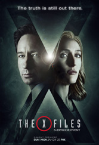
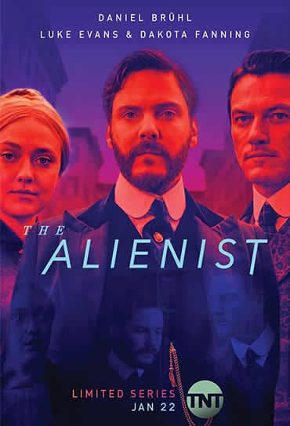
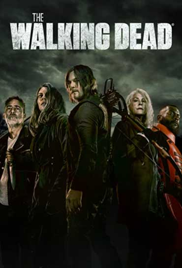

ARQUIVO X
- Ano: 1993
- Temporadas: 11
- Duração dos espisódios: 45 mim
- Diretor: Rob Bowman
- Genero: Policial, Ficção Científica
- Elenco: David Duchovny, Gillian Anderson, Mitch Pileggi, William B. Davis, Nicholas Lea

O ALIENISTA
- Ano: 2018
- Temporadas: 2
- Duração dos espisódios: 50 mim
- Diretor: Jakob Verbruggen
- Genero: Drama, Épico, Policial, Suspense
- Elenco: Dakota Fanning, Daniel Brühl, Luke Evans, Douglas Smith, Matthew Shear
Onde assistir?
 Trailer:
Trailer:


THE WALKING DEAD
- Ano: 2010
- Temporadas: 11
- Duração dos espisódios: 45 mim
- Diretor: Daniel Sackheim
- Genero: Ação, Drama, Suspense, Terror
- Elenco: Andrew Lincoln, Norman Reedus, Danai Gurira, Melissa McBride, Jeffrey Dean Morgan
Onde assistir?
Trailer: